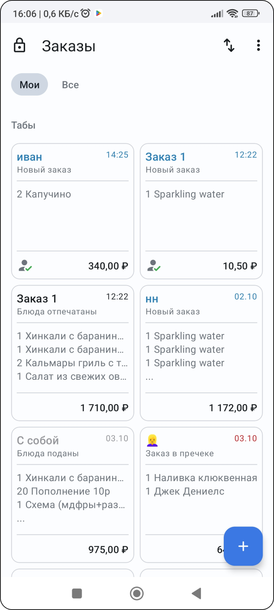

Задача
Разработать функцию взаимодействия официанта с меню ресторана при приёме заказа у гостей.
💡 В данный момент официанты ресторана «Смелые ёжики» принимают заказ у столика и записывают на блокнот и далее передают заказ устно поварам.
Личная цель — в кратчайшие сроки погрузиться в процесс приёма заказов и определить точки, в которых можно оптимизировать их процесс.
Анализ конкурентов
Для начального понимания бизнес-процесса необходимо проанализировать софт конкурентов. В рамках ограниченного времени для тестового задания я ограничился одним приложением от лидера рынка — iikoWaiter.


- У официанта должна быть возможность работать с заказами коллег
- По-умолчанию заказы привязываются к столам, но должна быть возможность работать с другими типами заказов
- Группировка и фильтрация позволяет организовать экран
- древовидная структура меню и цветовая кодировка категорий
- после добавления блюда меню остаётся на том же месте
- при тапе на блюдо в стоп-листе появляется поп-ап, лишнее действие
- меню очень ограничено по площади на экране


Минусы, над которыми стоит поработать:

Непривычная навигация
В приложении используются нестандартные паттерны навигации, поэтому для работы с приложением требуется дополнительное обучение = трата времени и денег. Использование нативных элементов ОС позволит легче адаптироваться новым сотрудникам.

Не оптимальный раздел с меню
Меню ресторана при добавлении блюд занимает только 25% экрана, что усложняет поиск при большом количестве блюд.
Работа с меню вне заказа
Нельзя просмотреть меню без создания заказа = отсутствует возможность консультации гостя по меню.
Неинформативные карточки блюд
Официанты заучивают наизусть всю информацию по блюдам, а при вопросе, на который не знают ответ — идут уточнять у администратора или повара
Глубинное интервью
На основе анализа я сделал несколько предположений, которые предстоит проверить в ходе интервью со специалистом в области

Респондент — управляющая рестораном, опыт в HORECA более 10 лет на должностях официанта, менеджера и управляющего. Знает всю операционную деятельность со стороны линейного персонала и руководства. Работала в 4 ресторанах.
Интервью
Расскажи о своём опыте в ресторанном бизнесе в целом и официантом в частности: сколько лет, в скольких ресторанах
Больше 10 лет в ресторанах, официантом 5 лет, 3 года менеджер, 2 года управляющей. 4 ресторана.
Опиши процесс приёма заказа от гостей и передачи его на кухню или в бар Применяем методы продаж, учитывая психотипы. Либо запоминаю, либо записываю в блокнот. Далее иду к терминалу, регистрирую заказ в системе (сначала бар, затем кухня)
Какими программами для автоматизации процесса приёма заказов ты пользовалась? Пробовали iikoWaiter, но не зашло из-за того, что идёт привязка в ip и нельзя принять заказ в другом зале, у которого другой ip роутера.За каждого официанта нужно платить отдельно.
Опиши их функционал, какие действия ты выполняла в них как официант при работе с заказом
В терминале iiko забивала заказ в систему, отправляла на кухню, получала информацию о готовности, печатала чек и подтверждала оплату
Можешь ли ты выделить какие-либо решения, которые тебе понравились и облегчили работу? Расскажи о них
Было удобно добавлять дозаказ. iikoWaiter удобен для монозаведений. из-за меньшего ассортимента.
И напротив — расскажи о том, что тебя раздражало и мешало. Чего тебе не хватало? В интерфейсе видны позиции всей сети ресторанов, что очень усложняет поиск.
💡 При дополнительных вопросах выяснилось, что проблема была в отображении блюд и модификаторов из меню других ресторанов, которые могут называться одинаково, но имеют разные id в системе, что путало официантов и приводило к некорректным остаткам.
Выведенные, но удалённые позиции не скрываются из выдачи.
При каких обстоятельствах принимаются заказы? Всегда ли это гости за столиком или в ресторане есть и другие случаи?
Заказы с собой, заказы на доставку вручную (по телефону) или от агрегаторов (приходит в приложении агрегатора и переносится вручную — от синхронизации отказались из-за некорректного переноса комментариев и модификаторов)
Сколько времени у тебя занимало знакомство с меню нового для тебя ресторана? Стажировка от 2 недель для опытного официанта, 1-2 месяца для людей без опыта.
По каким вопросам ты могла проконсультировать гостей, касательно конкретного блюда?
Состав, калорийность, вес, как выглядит, как на вкус, сочетаемость с напитками, аллергены. Нестандартные вопросы — Как долго могу хранить бургер в холодильнике. Я кормлю грудью и мне нужно что-то поесть. Что поесть с похмелья? А после отбеливания зубов?
А были ли вопросы по блюдам, на которые ты не могла ответить из-за своей неосведомлённости? Что интересует гостей?
Даже если не знаю ответ, то прошу минутку и иду уточнять. Чаще это доскональные данные, такие как граммовка ингридиентов.
Откуда ты брала информацию по блюдам касательно тех вопросов, что ты перечислила? Иду и уточняю в системе или у сотрудников.
Насколько часто и глобально менялось меню в тех местах, где ты работала?
Стабильно два раза в год (лето и зима), плюс спец-предложения (сезон лисичек, сезон блинов)
Даёшь ли ты свои рекомендации по меню? Если да, то на основе чего подбираешь блюда?
Полностью по предпочтению гостя (выявление потребности) и гастропары.
Проанализировав ответы, я сгруппировал самые важные инсайты, на основе которым сформулировал Job Story, которые можно взять в работу при проектировании функционала
Инсайты:

Job Story:

User Flow
Для того, чтобы проектировать экраны нужно понимание их структуры. Я оформил её в виде блок-схемы в User Flow официанта, ориентируясь на анализ конкурентов, интервью, инсайты и JS

Экраны приложения
Для ускорения процесса прототипирования, я не стал детально прорабатывать UI, создавать кит и заводить текстовые и цветовые стили. Использованы компоненты из Material Design 3 и моих прошлых работ.
При этом макет остаётся чистым, все слои подписаны, для облегчения редактирования используются автолейауты.
💡 Для просмотра скриншота на весь экран — клик по нему


- Нативная навигация при помощи таббара и шапки приложения
- Переключение между привязкой заказов более заметно
- Маркировка заказов по статусам. Красный — самые важные для реагирования заказы с блюдами, по которым просрочено время подачи
- Floating action button для быстрого следования по основному сценарию с первого экрана
- Для быстрой работы с заказами с собой и на доставку добавлены кнопки на экране со столами


- Меню открывается на весь экран
- Цветовая маркировка карточек с категориями и заливка позволяют легче ориентироваться в меню
- блюда в стоп-листе не активны
- При попадании блюда в стоп-лист, оно остаётся на своём месте, так как меню меняется редко и официанты запоминают расположение карточек внутри экрана.
- Для подтверждения корректного добавления блюда в заказ используется snackbar
- Карточка разделена на кнопку добавления и зону тапа для открытия подробной информации. Альтернативный вариант — тап по всей карточке добавляет в заказ, долгий тап открывает карточку блюда (ниже)

- Более очевидное переключение между гостями при помощи radio button
- Для повышения среднего чека и количества позиций в чеке добавлены гастропары. Возможны дополнительные продажи на основе анализа заказов и персональных рекомендаций (программа лояльности), о которых официанты могут не знать.
- после отправки заказа на кухню рядом с ценой отображается статус готовности
- поиск блюд разворачивает поле для поиска. Результаты появляются в side sheet по аналогии с предыдущими экранами.

Отдельно стоит рассмотреть карточку блюда. Важные данные, которые стоит в неё поместить:
- фото, которое можно показать гостю
- данные по калорийности
- аллергены
- состав
- вес блюда и граммовки ингридиентов
- теги (диетическое, можно кормящим грудью, вегетарианское, острое и т.д.)
Это позволит официантам давать полную консультацию по блюду без необходимости искать ответ в другом месте.
Дополнительный плюс — приложение можно использовать в качестве учебного пособия при адаптации нового официанта. Всю информация по меню максимально актуальна.